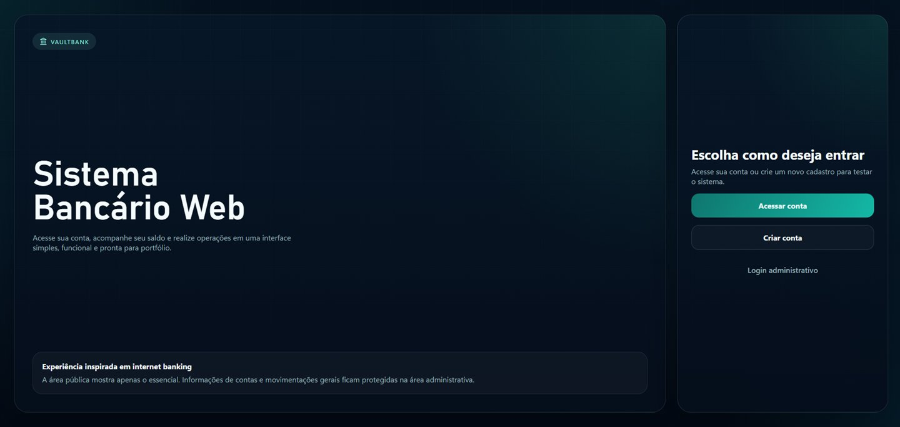
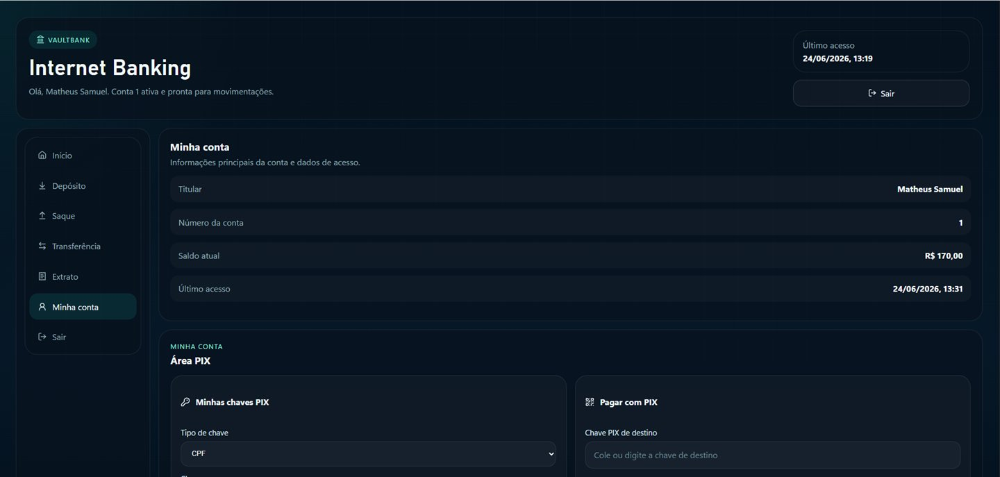
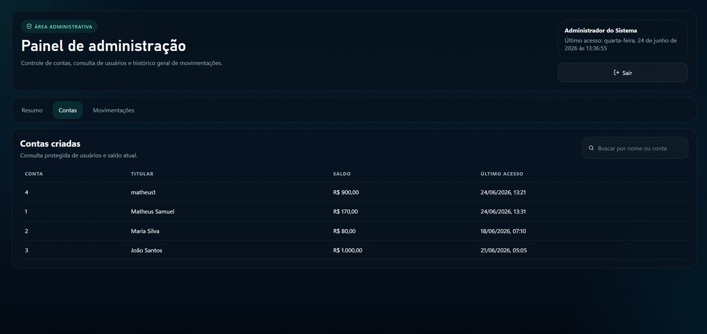

Portfólio profissional
Matheus Samuel
Desenvolvedor Java Full Stack
Desenvolvo aplicações web completas com Java, Spring Boot, React e PostgreSQL, criando APIs seguras, interfaces responsivas e sistemas com autenticação, dashboards, relatórios, Docker e deploy em produção.
- Java
- Spring Boot
- React
- PostgreSQL
- Docker
- JWT

Aberto a oportunidades
Back-end Java / Full Stack Júnior
Arquitetura aplicada
API REST segura
JWT e permissões
PostgreSQL em produção
Sobre mim
Desenvolvedor em formação com foco em produto real
Sou Desenvolvedor Java Full Stack em formação, com foco na construção de aplicações web completas utilizando Java, Spring Boot, React e PostgreSQL.
Tenho experiência prática com APIs REST, autenticação JWT, dashboards, relatórios, Docker, deploy em produção e integração front-end/back-end.
Meu objetivo é atuar como Desenvolvedor Back-end Java ou Full Stack Júnior, contribuindo em times que valorizam código organizado, aprendizado contínuo e soluções com impacto real.
APIs REST
Spring Security
JWT
Dashboards
Deploy
Git/GitHub
Minha forma de trabalhar
Construindo software com clareza, evolução e contexto
Código organizado
Priorizo estrutura clara, separação de responsabilidades e padrões que facilitam manutenção.
Aprendizado contínuo
Evoluo com estudo consistente, prática em projetos completos e abertura para feedback.
Foco em produto real
Penso em usabilidade, segurança, dados e deploy para criar soluções que funcionam fora do ambiente acadêmico.
Stack técnica
Tecnologias organizadas por contexto de uso
Back-end
Front-end
Banco de Dados
Ferramentas
Experiência
Vivência prática com dados, sistemas e melhoria de processos
Estagiário de TI
Celesc - Companhia de Energia do Estado de Santa Catarina
Atuação na área de Tecnologia da Informação com suporte funcional, análise e organização de dados, dashboards e acompanhamento de sistema corporativo interno.
- Desenvolvimento e manutenção de dashboards em Power BI
- Análise, organização e validação de dados com Excel
- Testes, identificação e reporte de bugs
- Acompanhamento de sistema corporativo interno
- Sugestões de melhoria para processos e fluxos operacionais
Power BI
Excel
Análise de Dados
Suporte Funcional
Projetos
Cases que demonstram construção de sistemas reais
Sistema de Gestão de Estoque
Sistema full stack para controle de produtos, categorias e movimentações de estoque, com autenticação JWT, dashboard operacional, relatórios PDF/Excel, Docker e deploy em produção com Railway e Vercel.
Deploy em produção com Railway e Vercel
Problema resolvido
Centraliza o controle de estoque e reduz perda de visibilidade sobre entradas, saídas e produtos críticos.
Funcionalidades principais
- Autenticação JWT e permissões
- Dashboard com indicadores
- Relatórios em PDF e Excel
Aprendizados e desafios
Integração front-end/back-end, segurança, regras de movimentação e deploy full stack.
Java
Spring Boot
React
PostgreSQL
JWT
Docker
Material UI






Sistema Bancário Web
Aplicação web que simula uma experiência de internet banking, com operações de conta, transferências, extrato, painel administrativo, exportação em PDF e ambiente containerizado com Docker.
Deploy em produção na Vercel
Problema resolvido
Simula fluxos financeiros com experiência próxima de um internet banking real.
Funcionalidades principais
- Depósitos, saques e transferências
- Painel administrativo
- Extrato e exportação em PDF
Aprendizados e desafios
Modelagem de fluxos de estado, validações de operações e organização da interface.
React
Vite
JavaScript
CSS
LocalStorage
Docker
Convite RSVP
Aplicação responsiva para confirmação de presença, controle de convidados e administração de eventos, com dados em nuvem via Firebase.
Problema resolvido
Substitui confirmações manuais por um fluxo digital simples para convidados e organizadores.
Funcionalidades principais
- Formulário RSVP
- Painel de confirmações
- Dados em nuvem com Firebase
Aprendizados e desafios
Responsividade, integração com Firebase e experiência simples para diferentes usuários.
HTML5
CSS3
JavaScript
Firebase
Projetos em finalização para novos estudos de caso
Sistema HelpDesk
Sistema para abertura, acompanhamento e gestão de chamados, com autenticação, dashboard, SLA e fluxo operacional.
AI Web Auditor
Ferramenta para auditoria de páginas web com análise técnica, relatórios e apoio de IA generativa.
Sistema de Bolão da Copa
Aplicação para rankings, palpites, autenticação e gestão de participantes.
Sistema de Gestão Financeira
Sistema para controle de receitas, despesas, categorias, metas, transações recorrentes, dashboards financeiros e relatórios.
Certificações
Formações que sustentam minha evolução técnica
Back-end
Java + Spring Boot
Cubos Academy • 18h
Foco: APIs, back-end e fundamentos Java
Full Stack
Full Stack Java + Angular
Santander Bootcamp • 115h
Foco: desenvolvimento full stack e aplicações web
Dados
Excel Básico
Senac • 30h
Foco: dados, planilhas e organização de informações
Contato
Vamos construir algo juntos?
Estou aberto a oportunidades como Desenvolvedor Java Back-end, Full Stack Júnior, estágio em tecnologia e projetos freelancer.
Formulário conectado para contato direto. Se preferir, use o botão de e-mail.